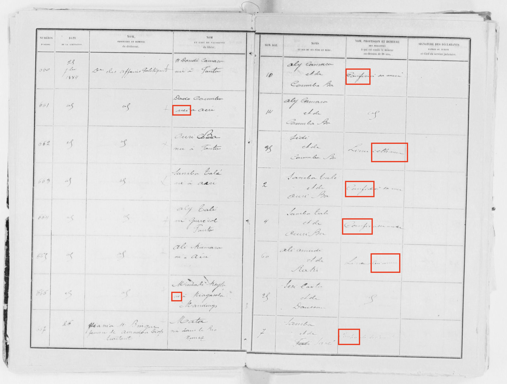
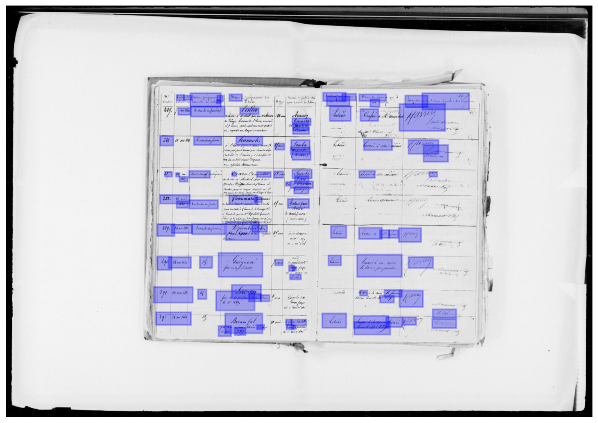
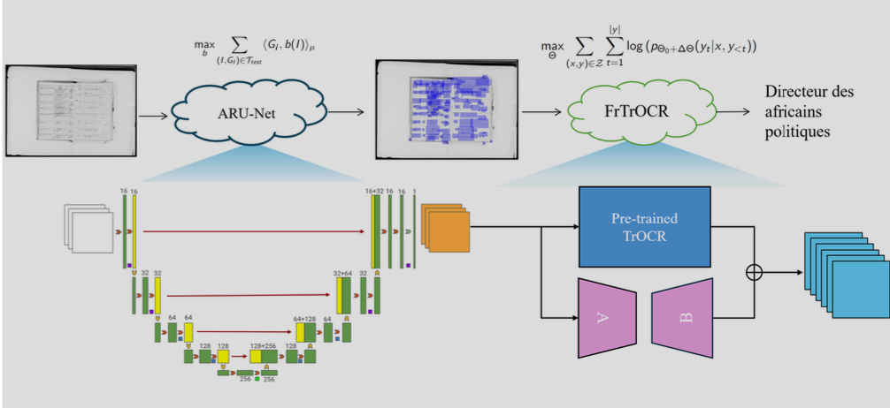
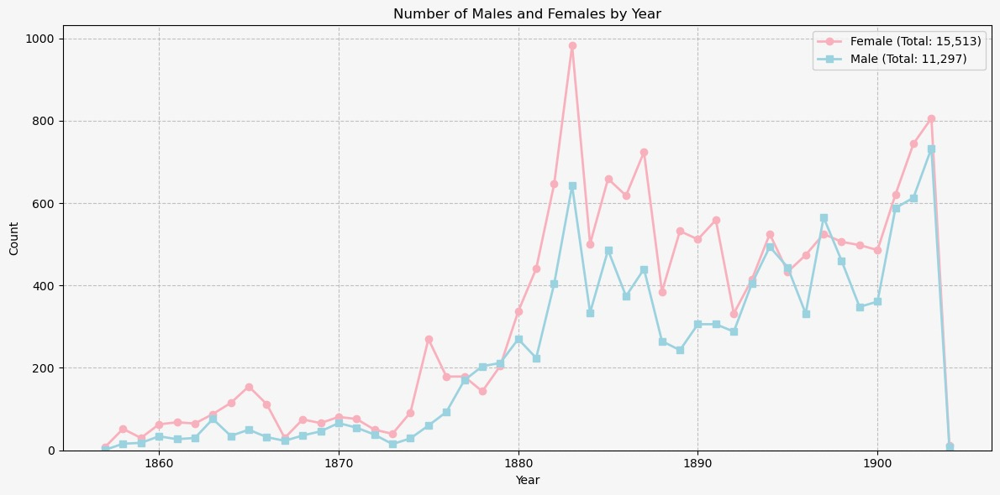
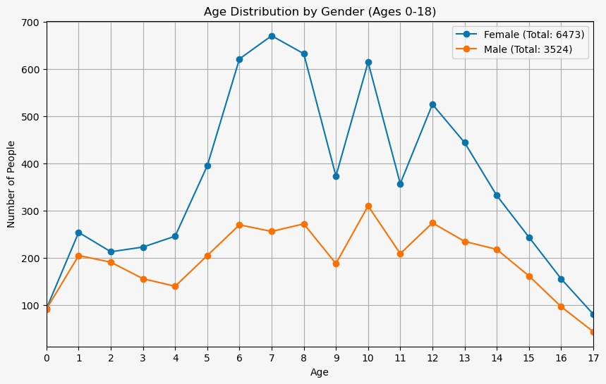

Summer 2024
Senegal Liberations Project
The Senegal Slave Liberations Project builds on the Slave Voyages Database, which has transformed the study of the trans-Atlantic slave trade by presenting the most comprehensive collection of individual slave trade voyages and the most complete set of evidence of African ports of embarkation and American ports of disembarkation. The Slave Voyages Database, however, tells us virtually nothing about slavery and the slave trade within Africa. The Senegal Slave Liberations Project provides a crucial counterpart to the Slave Voyages project in presenting evidence of slavery and the slave trade in the Senegambian, Mauritanian, and Malian region of West Africa during the second half of the nineteenth century. The Senegal Slave Liberation Project involves three linked stages: providing unique identification for each case of liberation, analysis of the data, and development of visualization of the data to support academic research and innovative pedagogy.
Project Members
Project Member
Designation
ORCID
Transcribing and Translating / Deducing Sex of Liberated Individuals
Of the roughly 28,000 total records included in the Senegalese registers, there remained over 10,000 that still required translation and transcription. My goal for the summer was to enter the data for this remaining group. For the first two weeks of the internship, I was able to fully transcribe a little over 2,300 entries.
Going into week three of the internship, I had the idea that a paper that focused on the relationship between age and sex of liberated individuals could significantly add to the literature on West African slavery. Sex was not something that was specifically recorded by the greffier (the french clerk consolidating the registers). However, since French is a gendered language, descriptive verbs reveal the sex of the subject. With encouragement from Professor Roberts, I shifted the focus of my data entry towards recording the sex of every liberated person in addition to transcribing all available information.
The Senegalese Liberations project previously released a preliminary analysis that focused on the period of 1895-1903 in which sex was recorded. During the following four weeks, I recorded gender for every remaining entry in the registers from 1857 to 1894, which ended up totaling approximately 17,000 entries.
I ran into an issue when recording gender: occasionally the gender of certain descriptive verbs would not correlate correctly with the gender of pronouns or other verbs used. To combat this, and clean the dataset, I designed a system that prioritizes indications of sex that require the most intentionality on the part of the greffier.

OCR Enhancement and Sex Distribution Analysis in the Senegalese Registers
For the first few weeks of the project, my primary focus was the development and fine-tuning of an optical character recognition (OCR) system tailored to convert nineteenth century handwritten French records we have into structured, searchable digital data. We recognized that the initial models we considered, such as the pre-trained TrOCR model, had significant limitations. For example, TrOCR was originally trained on the IAM dataset, which focuses on English handwriting. Since our project involved French text, the model’s accuracy was insufficient. In addition, our source was a register organized into distinct columns rather than into text (sentences and paragraphs).
Our first step in overcoming this challenge was to enhance the OCR model’s ability to handle French handwriting. We accomplished this by fine-tuning TrOCR using LoRA (Low-Rank Adaptation) on a specific dataset of French handwritten text. This process required us to segment the input images into individual lines of text, which was critical because TrOCR could only process text lines, not full pages. To achieve this, we implemented ARU-Net, a segmentation model designed for precisely this type of task.

Once the segmentation issue was resolved, we conducted extensive fine-tuning on the French dataset, which included manually-labeled examples to ensure high accuracy. This allowed us to adapt TrOCR to recognize the nuances of 19th-century French handwriting, improving its performance significantly.
One of the key challenges was balancing the model’s complexity with the limited size of our dataset. We carefully adjusted the training parameters to avoid overfitting while still maximizing the model’s ability to generalize across different handwriting styles. The results were promising; our fine-tuned model, which we named FrTrOCR, demonstrated a noticeable improvement in accuracy compared to the baseline TrOCR model.

Future Steps
In the final weeks of the internship, Daniel and Hazel focused on creating data visualizations to analyze trends in the sex and age distribution of liberated individuals over time. Using bar charts and line graphs, we depicted the number of males and females liberated each year. Our visualizations revealed a clear trend: females tend to be liberated in greater numbers than males and are younger on average. This disparity suggested a potential link to child trafficking, particularly of young girls. These insights have been instrumental in our ongoing research. Daniel and Hazel, along with Professor Roberts, have begun drafting an academic paper to explore these findings in greater depth and to shed light on the potential factors contributing to this trend.

